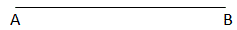
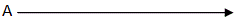
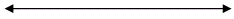
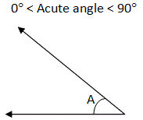
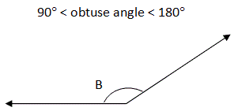
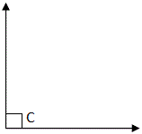
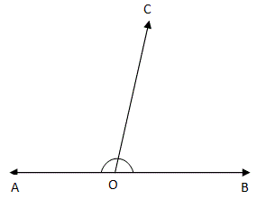
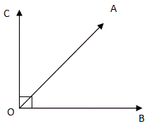
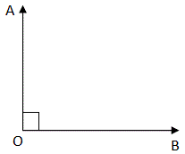
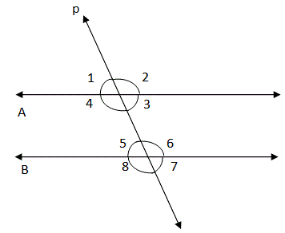

Lines and angles
Here are some basic definitions and properties of lines and angles in geometry.
- Line segment: A line segment has two end points with a definite length.

- Ray:A ray has one end point and infinitely extends in one direction.

- Straight line:A straight line has neither starting nor end point and is of infinite length.

- Acute angle: The angle that is between 0° and 90° is an acute angle, ?A in the figure below.

- Obtuse angle: The angle that is between 90° and 180° is an obtuse angle, ?B as shown below.

- Right angle: The angle that is 90° is a Right angle, ?C as shown below.

- Supplemenrary angles

In the figure above, AOC + COB = AOB = 180°
If the sum of two angles is 180° then the angles are called supplementary angles.
Two right angles always supplement each other.
The pair of adjacent angles whose sum is a straight angle is called a linear pair.
- Complementary angles:

COA + AOB = 90°
If the sum of two angles is 90° then the two angles are called complementary angles.
- Adjacent angles:
The angles that have a common arm and a common vertex are called adjacent angles.
In the figure above, BOA and AOC are adjacent angles. Their common arm is OA and common vertex is ‘O’.
- Perpendicular lines: When there is a right angle between two lines, the lines are said to be perpendicular to each other.Here, the lines OA and OB are said to be perpendicular to each other.

- Parallel lines:

Here, A and B are two parallel lines, intersected by a line p.
The line p is called a transversal, that which intersects two or more lines (not necessarily parallel lines) at distinct points.
As seen in the figure above, when a transversal intersects two lines, 8 angles are formed.